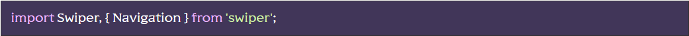
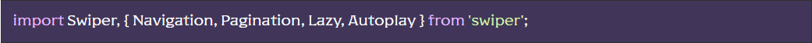

[HTML] Існує два сніпети для побудови HTML-структури слайдера:
- swiper – будує мінімальну структуру з уже доданими класами слайдера (для досвідченіших)
- swiperfull - будує повну структуру слайдера з додаванням всіх можливих елементів керування (кнопки “ліворуч/праворуч”, скролл, пагінація (булети)) з уже доданими класами слайдера. Весь код супроводжується коментарями (для новачків).
[JS] У файлі js/app.js розкоментувати рядок import “./files/sliders.js”;
У файлі js/files/sliders.js виконується підключення самого слайдера “Swiper” з пакета NPM (підключено за замовчуванням)
При необхідності можна підключити більше потрібних модулів:
Повний перелік модулів – тут
Також, нижче за кодом, є приклад-підготовка для створення конкретного слайдера (функція initSliders();) Тут ми створюємо та налаштовуємо потрібні нам слайдери, не забуваємо вказувати модулі для конкретного слайдера
Інформацію з налаштування дивись у документаціі на сайті слайдера.
Ініціалізація слайдера(ів) initSliders(); відбувається після повного завантаження сторінки нижче за кодом:
[SCSS] За замовчуванням, у файлі js/files/sliders.js підключені базові, мінімально необхідні для роботи стилі слайдера import “../../scss/base/swiper.scss”; (Для більш досвідчених). Також є можливість підключити (розкоментувавши рядок) повні стилі слайдера із файлу scss/libs/swiper.scss або з пакета import ‘swiper/css’; (для початківців)